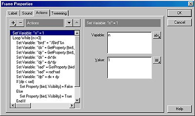

This tutorial is designed to show you how to use Loop Actions and If/Else Actions. In conjunction with this you will also see how movie clips can be used to sample properties and events in the background. This is a very powerful capability that allows movies to perform parallel processing (several computations going on at the same time, not in sequence).
This tutorial is intended for beginning Flash 4 users.
No previous tutorials are required.
Download the source files and have them unzipped for review during this tutorial.
Step-by-step
Overview:
Like it or not, if you want to get the most out of Flash 4, you will need to learn the Flash 4 programing language. So for all those graphic artists out there that may be knee-jerking to this, rest assured that anyone can learn programming, while only some will ever be good graphic artists.
What you will learn with this tutorial is the following:
How to make a movie clip follow the mouse.
How to use the Loop action.
How to use the If and Else actions.
Making your movie.
In this tutorial there are both foreground movie clips and background movie clips. Background movie clips are continuously running but they don't directly display anything. Foreground movie clips will have images, button etc. that can be seen.
Background movie will be used to keep track of the mouse position and the distance from the mouse to each bird. They will perform the check to see if the mouse is near a bird and set its visibility accordingly. The foreground movie clips will contain the birds and the Mouth Man image that follows the mouse. All other images will be placed directly on the stage. O.K. so let's get started.
Start Flash and set the movie properties Modify | Movie to Frame Rate = 20, Dimensions = 550x400, and Background=Black.
First we will make the Mouthman graphic follow the mouse.
Select Libraries | Graphic and then choose the Mouthman image.
Drag the Mouthman graphic onto the stage.
Double click on the Mouthman image to open the Instance Properties window.
Select Behavior | Movie Clip and give it an Instance Name of MouthMan
The first frame of the movie is a keyframe. Double click on this to open the Frame Properties window.
Select the Actions tab.
Add an action by clicking on the + sign and then choose Drag Movie Clip
The options for this action will appear on the right. TypeMouthMan in the window and select Lock Mouse to Center.
The action should look like this:
Start Drag ("MouthMan", lockcenter)
Finally, insert a blank frame F5 and give it a stop action.
Test your movie ( Control | Test Movie ) to see if the Mouthman follows the mouse. If not double check your steps and fix any problems until it works.
Now we will add the Birds
Select Libraries | Graphic and then choose the Bird image.
Drag the Bird graphic onto the stage.
Double click on the Bird image to open the Instance Properties window.
Select Behavior | Movie Clip and give it an Instance Name of Bird1
Repeat steps b, c, and d two more times, changing the bird number to 2 and 3 respectively.
You should have three birds on stage now named Bird1, Bird2, and Bird3.
Now for the programming part.
If your Library window isn't open then select Window | Library or press CTRL-L to open it.
Select Options | New Symbol in the library window.
Give it the name Bird Hit Detect and select Movie Clip for the behavior.
Highlight frame 2 and press F5 to insert another frame.
Double click on keyframe 1 to open the Frame Properties window.
Select the Actions tab.
The actions in this keyframe must accomplish two things:
It must have a Loop (a set of statements that are repeated) that checks each bird to see if the mouse is near or not, and
It must set the visibility to FALSE if the mouse near and TRUE if the mouse is not near. Think of it like this:
Loop over three birds
check if mouse is near a bird
set visibility
End Loop (i.e. Next Bird)
First the Loop. The Loop While and End Loop surrounds a set of statements that will be executed as long as the condition statement is TRUE.
In our case we will have a bird counter n that goes from 1 to 3. As long as n is less than or equal to 3 we will continue our loop. The first thing
we must do is to set n to 1 for the first bird. Then at the very bottom of our loop we will add 1 to it each time we finish the statements in the loop.
This looks like:
Set Variable: "n" = 1
Loop While (n<=3)
--- other statements will go here ----
Set Variable: "n" = n+1
End Loop
Determine if the mouse is near one of the birds. Sorry if this sounds a bit mathematical but once you understand it you can use it in many applications.
Basically, what we are doing is computing the distance the mouse is from each bird. If that distance is smaller than the size of the bird then we found the bird and we turn it off.
So, if we let the distance the mouse is from the bird be the variable dp and we let the size of the bird be the variable rad, then we have found a bird
whenever dp is less than rad. This is where the IF and ELSE actions come in.
In english: IF dp is less than rad set visibility to FALSE, ELSE (or otherwise) set visibility to TRUE.
This looks like this:
Set Variable: "n" = 1
Loop While (n<=3)
--- other statements will go here ----
If (dp < rad)
Set Property (bird, Visibility) = False
Else
Set Property (bird, Visibility) = True
End If
Set Variable: "n" = n+1
End Loop
Now we have to set (compute) the distance (dp) and the size (rad) variables. The distance squared between two points on the screen is the sum of the differences squared between their coordinates.
In other words:
distance^2 = (X2 - X1)^2 + (Y2 - Y1)^2
where X1 and Y1 is the location of the mouse and X2 and Y2 is the location of the bird.
To make our lives more easy we will just use the width of the bird image as its size (this is best for square images).
The actions for this Hit Detection now looks like this:
Set Variable: "n" = 1
Loop While (n<=3)
Set Variable: "bird" = "/Bird"&n
Set Variable: "dx" = GetProperty (bird,_x) - GetProperty ("/MouthMan",_x)
Set Variable: "dy" = GetProperty (bird,_y) - GetProperty ("/MouthMan",_y)
Set Variable: "dx" = dx*dx
Set Variable: "dy" = dy*dy
Set Variable: "rad" = GetProperty (bird,_width)
Set Variable: "rad" = rad*rad
Set Variable: "dp" = dx + dy
If (dp < rad)
Set Property (bird, Visibility) = False
Else
Set Property (bird, Visibility) = True
End If
Set Variable: "n" = n+1
End Loop

Remember, this is the Hit Detector and it must be placed on stage. It is a background movie clip. Drag it from your symbol library
and place it anywhere you like on stage. It will appear as a small white dot.
At this point your movie is complete as far as the mouse tracking and detection of bird positions. The remainder of this tutorial
deals with the display of the mouse position. This is not a necessary addition. It is included just for fun.
The technique used here to display the mouse position can also be used during development of the main movie
to display variables for debug and checkout. The idea is just a simple background movie that is constantly getting the
value of a variable and placing it in a display. The display elements or fields can be placed directly on stage of they can be part of the
movie clip that is sampling the mouse position. It this case the display fields will be placed directly on stage.
Select Text Tool and select the Text Field option.
Drag the Mouthman graphic onto the stage.
Drag and area on stage where you want to display the X position of the mouse.
Repeat the above step for the Y position display.
Using the Text Tool without the Text Field selected, give these fields a label, like "X = " or something.
Now using the Arrow Tool right click on one of the Text Fields and choose Properties.
In the Text Field Properties window type the Variable name xDisplay, and un-check the Draw Border and Background box. Then click OK.
Repeat the last two steps for the yDisplay.
Now for the background movie that will get the X and Y values and place them in the display.
On your symbol library window select Options | New Symbol and give it a name Clip Position and a Behavior of Movie Clip.
On the time line select the second frame and hit F5 to insert a blank frame. This forces the first frame to be executed over and over again when placed in the main movie.
Now double click on the first keyframe and choose the Actions tab.
There will be 4 actions, 2 for the x position (get the x position and display it) and 2 for the y position (same as x).
Set Variable: "xval" = GetProperty ("/MouthMan",_x)
Set Variable: "yval" = GetProperty ("/MouthMan",_y)
Set Variable: "/:xDisplay" = xval
Set Variable: "/:yDisplay" = yval
Note: that this can be accomplished with only two lines. The extra lines are here for illustration.
Now go back to your main scene and drop this movie clip somewhere on stage.
Need More Help?
[Download Source] Don't forget to get the source files and look them over.
Troubleshooting
It's safe to say that there are a number of potential pitfalls in building a Flash 4 movie of this type. Although this is a rather simple illustration of Flash 4 programming
it is filled with movie clip references and variables. My suggestion in making a movie of this type is to have
paper and pencil handy and define variables and movie clips before hand. Make notes as you work. Be consistent in your naming convention.